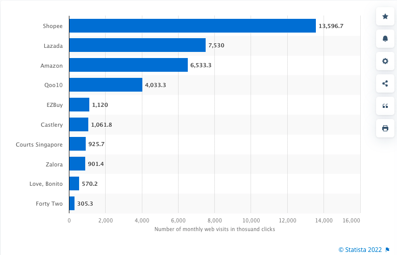
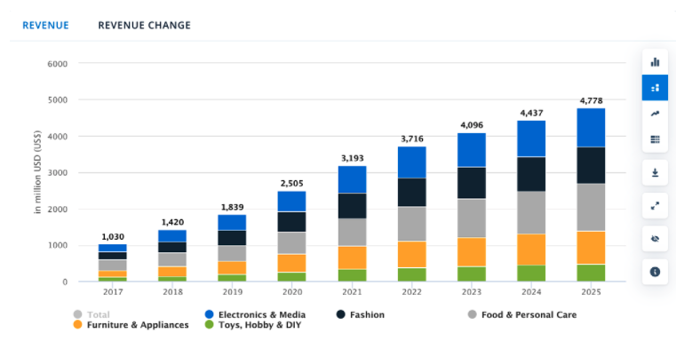

Amazon.sg
Amazon.com is an international e-commerce company and the leading e-retailer in the United States,
with net sales amounting to close to 386 billion U.S. dollars in 2020. As a worldwide e-commerce
company, Amazon operates in 13 countries and ships worldwide to more than 100 countries. Due to its
global scope and reach, Amazon is considered one of the most valuable brands worldwide.
Project Overview
Problem Statement

Though Amazon is the largest online retailer in the world, it ranks only 3rd in Singapore with
Shopee leading at 13.6 million visits as of the 2nd quarter of 2021, followed by Lazada at 7.5
million while Amazon at 6.5 million (Statista, 2021).
However, I believe Amazon has the potential to strive in Singapore as well by redesigning its
mobile application
Solution
Redesign Amazon.sg mobile application that meets the goals of the business and user
New branding that effectively communicates Amazon’s unique personality
Design Process

EMPATHISE
Market Research

With the rising consumer spending, government support and growing preference for online shopping,
Singapore e-commerce market is projected to grow at a compound annual growth rate of 16.2% through 2025
to be worth $14.2b, according to GlobalData.
73% of online consumers in Singapore have patronized overseas merchants. Presently, cross-border
e-commerce takes 35% of the entire Singapore e-commerce market (Heysara PteLtd, 2021).
In 2021, Singapore’s user penetration is expected to be 55.9% and should reach 67.2% by 2025. The
average revenue per user (ARPU) is also expected to reach USD 846.96 by 2025.
According to a study by performance marketing firm Reprise Digital, Singaporean shoppers are very
price-conscious, with 63% of consumers choosing to shop online for promotions and discounts. In fact,
52% of Singaporean shoppers do their due diligence by visiting brand websites before making a purchase
decision.
Competitor's Analysis
To compare Amazon with its stronger competitors, I did a competitor analysis in which these insights
gained will provide key information in terms of the strengths we want to build upon and the
weaknesses we want to avoid.
Strengths
Known for its promotions & discounts: Instead of focusing on advertisements, Shopee managed
to capture customers through various campaigns, for promotions from free shipping,
discounts, to flash sales all year round.
Customer loyalty: With Shopee coins collected after each purchase, consumers can use these
coins to enjoy further discounts on the next purchase, attracting more customers to its
platform
A variety of payment methods to ease payment transaction
Weaknesses
Lack of variety of product origin
Quality of items is compromised
Strengths
Free return: free return of items received in case the item doesn’t meet the client’s
expectations.
Brand presence: Lazada is well known in the local market and has already gained customers’
trust
Wide variety of sellers: with the potential sales from high traffic channel, more seller
want to go on board to the Lazada platform
A variety of payment methods to ease payment transaction
Weaknesses
Limited free shipping options
Quality of items is compromised
Lack of variety from product origin
User Persona
Using insights gained from secondary research, I created personas to represent Amazon’s users
demographics.